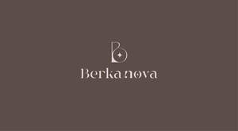

Trade Mark Journal No.2025/048 28 November 2025
UK00004293792 12 November 2025 (3,11,14,18,21,25,35)

- Class 3
- Makeup; Nail makeup; Lip makeup; Facial makeup; Make-up remover; Make-up powder; Eye makeup remover; Make-up removers; Skin make-up; Eye makeup; Natural makeup; Make-up for the face; Foundation make-up; Make-up foundation; Cleaner for cosmetic brushes; Eye make-up removers; Facial concealer; Make-up palettes containing cosmetics; Make-up foundations; Organic makeup; Eye make-up; Make-up removing lotions; Make-up for compacts; Nail paint [cosmetics]; Multifunctional makeup; Make-up removing creams; Hair cosmetics; Eyeliner; Mascara; Nail primer [cosmetics]; Nail varnish remover [cosmetics]; Make-up kits; Make-up removing gels; Make-up for the face and body; Nail polish removers [cosmetics]; Facial cleansers; Facial scrubs; Facial moisturizers; Facial toner; Facial masks; Facial serum for cosmetic use; Body and facial gels [cosmetics]; Body and facial creams [cosmetics]; Facial packs; Facial creams [cosmetics]; Cleaning masks for the face; Skin cleaners [non-medicated]; Skin cleaning and freshening sprays; Skin cleansers [cosmetic]; Softening cleanser [cosmetic]; Face wash [cosmetic]; Cosmetic skin fresheners; Skin cleansers; Skin calming serum; Beauty serums; Skin moisturizer; Skin moisturizer masks; Skin moisturiser; Skin moisturisers; Skin hydrators; Skin lotion; Skin emollients [non-medicated]; Skin hydrators being injectable dermal fillers; Skin cleansing cream [non-medicated]; Moisturiser; Skin cleansing lotion; Skin cream; Moisturising skin creams [cosmetic]; Moisturising body lotion [cosmetic]; Skin cleansing cream; Skin creams; Creams for the skin; Skin whitening creams; Body mask lotion; Moisturising creams; Lotions for the skin; Skin lotions; Skin care oils [non-medicated]; Moisturising creams, lotions and gels; Moisture body lotion; Wipes impregnated with a skin cleanser; Body moisturisers; Scalp treatments (Non-medicated -); Facial masks [cosmetic]; Facial beauty masks; Facial lotion; Face masks; Skin masks; Face and body masks; Body mask cream; Facial cream; Make-up preparations for the face and body; Mask pack for cosmetic purposes; Face scrub; Hair conditioner; Hair shampoo; Hair conditioners; Hair shampoos; Hair bleach; Hair moisturizers; Hair serums; Hair creams; Perfume; Perfumes; Fragrances; Scents; Hair spray; Hair lotion; Sunscreen.
- Class 11
- Dryers (Hair -); Hair dryers; Electric hair dryers; Hair drying appliances; Travel hair dryers; Electrical hair driers; Facial steamers; Spa baths [vessels]; LED lamps; LED candles.
- Class 14
- Jewellery; Necklaces [jewellery]; Jewellery, including imitation jewellery and plastic jewellery; Pendants [jewellery]; Bracelets [jewellery]; Brooches [jewellery, jewelry (Am.)]; Ornaments [jewellery]; Amulets being jewellery; Pearls [jewellery]; Trinkets [jewellery]; Necklaces [jewellery, jewelry (Am.)]; Jewelry; Fashion jewellery; Lockets [jewellery]; Gold jewellery; Brooches [jewelry]; Jewelry brooches; Brooches being jewelry; Charms [jewellery]; Charms for jewellery; Jewellery charms; Enamelled jewellery; Items of jewellery; Costume jewellery; Rings [jewellery]; Rings being jewellery; Wristlets [jewellery]; Chains [jewellery, jewelry (Am.)]; Chains [jewellery]; Jewellery chain; Watches; Straps for watches; Wristlet watches; Bracelets; Bracelets [jewelry]; Necklaces.
- Class 18
- Makeup bags; Make-up boxes; Make-up bags; Make-up cases; Cosmetic bags; Cosmetic purses; Cosmetic bags sold empty; Toiletry bags; Tote bags; Bags; Leather shopping bags; Duffle bags; Cross-body bags; Leather bags; Make-up bags sold empty; Duffel bags; Crossbody bags; Tool bags of leather, empty; Belt bags and hip bags; Reusable shopping bags; Shoe bags; Purses; Handbags, purses and wallets; Coin purses; Carry-all bags; Evening purses; Small purses; Leather bags and wallets.
- Class 21
- Make-up brushes; Eyeliner brushes; Mascara brushes; Hair for brushes; Hair brushes; Cosmetics brushes; Brushes; Eyelash brushes; Facial sponges for applying make-up; Skin cleansing brushes; Lip brushes; Make-up sponges; Cosmetic brushes; Hair color application brushes; Applicator sticks for applying make-up; Nail brushes; Hair tinting brushes; Shampoo brushes; Makeup sponge holders; Eyebrow brushes; Eye make-up applicators; Bath brushes; Bath sponges; Combs; Hair combs; Eyelash combs; Electric hair combs; Hot air hair brushes.
- Class 25
- Clothing; Knitwear [clothing]; Jackets [clothing]; Ready-to-wear clothing; Woolen clothing; Furs [clothing]; Garments for protecting clothing; Clothing layettes; Layettes [clothing]; Linen clothing; Headbands [clothing]; Headbands for clothing; Gloves [clothing]; Gloves as clothing; Clothes; Maternity clothing; Denims [clothing]; Shorts [clothing]; Capes (clothing); Leather clothing; Clothing of leather; Leather (Clothing of -); Silk clothing; Collars [clothing]; Parts of clothing, footwear and headgear; Knitted clothing; Hoods [clothing]; Embroidered clothing; Wristbands [clothing]; Belts [clothing]; Belts for clothing; Waterproof clothing; Rainproof clothing; Casual clothing; Jackets being sports clothing; Jackets (Stuff -) [clothing]; Stuff jackets [clothing]; Bottoms [clothing]; Playsuits [clothing]; Ready-made clothing; Clothing for leisure wear; Sandals; Insoles [for shoes and boots]; Shoes; Bath sandals; Beach shoes; Slip-on shoes; Shoe soles; Dress shoes; Flip-flops for use as footwear; Leather shoes; Yoga shoes; Booties; Slippers; Walking shoes; Sneakers; Dance shoes; Ladies' sandals; Sneakers [footwear]; Socks; Beach footwear; Women's shoes; Bra straps; Bras; Strapless bras; Straps for bras; Bra extenders; Bra strap extenders; Strapless brassieres; Sports bras; Brassieres; Lingerie; Bralettes; Undergarments; Panties; Maternity lingerie; Underwear; Shapewear; Knitted underwear; Nipple pasties; Swimsuits; Bikinis; Thermal underwear; Women's underwear; Swimwear; Dress shirts; Underpants; Jeans; Denim pants; Blue jeans; Trousers shorts; Denim jackets; Pants; Trousers; Shorts; Trouser socks; Shirts; Yoga pants; Sweat pants; Casual shirts; Short-sleeved T-shirts; Short-sleeve shirts; Pajama bottoms; Blouses; Sweatshirts; Gym shorts; T-shirts; Beanie hats; Hats; Caps; Hoodies.
- Class 35
- Arranging of contracts for others for the buying and selling of goods; Arranging business introductions relating to the buying and selling of products; Arranging of buying and selling contracts for third parties; Telephone marketing services [not selling]; Provision of an online marketplace for buyers and sellers of goods and services; Carrying out auction sales; Providing online marketplaces for sellers of goods and or services; Promoting the sale of goods and services of others by awarding purchase points for credit card use; Promoting the sale of fashion goods through promotional articles in magazines; Arranging the buying of goods for others; Preparation of mailing lists for direct mail advertising services [other than selling]; Arranging of auction sales; Auction sales (Arranging of -); Providing a searchable online advertising guide featuring the goods and services of other on-line vendors on the internet; Promoting the goods and services of others through the administration of sales and promotional incentive schemes involving trading stamps; Promoting the sale of goods and services of others through the distribution of printed material and promotional contests; Online marketing; Promoting the goods and services of others through the distribution of discount cards; Marketing the goods and services of others by distributing coupons; Promoting the sale of goods and services of others through promotional events; Advertising the goods and services of online vendors via a searchable online guide; Procurement of contracts for the purchase and sale of goods and services; Promoting the goods and services of others by distributing coupons; Promotion, advertising and marketing of on-line websites; Retail services connected with the sale of subscription boxes containing cosmetics; Providing a searchable online advertising guide featuring the goods and services of online vendors; Arranging commercial transactions, for others, via online shops; Mail-order advertising; Online retail services in relation to downloadable virtual handbags; Promoting the sale of the services [on behalf of others] by arranging advertisements; Retail service connected with the sale of power tools via a distributorship; Online retail store services in relation to clothing; Advertising services relating to the sale of goods; Online retail store services relating to clothing; Product merchandising for others; Online advertising; On-line auction bidding for others; Product merchandising; Online retail services relating to handbags; Promoting the artwork of others by means of providing online portfolios via a website; Promoting the music of others by means of providing online portfolios via a website; Sales promotion; Product marketing; Online retail services relating to jewelry; Promoting the designs of others by means of providing online portfolios via a website; Online retail services in relation to downloadable virtual clothing; Affiliate marketing; Procurement of contracts for others relating to the sale of goods; Online retail services in relation to downloadable virtual footwear; Online retail services for downloadable virtual clothing; Rental of electronic point of sale (EPOS) equipment; Wholesale ordering services; Online retail services relating to cosmetics; Modelling for advertising or sales promotion; Modeling for advertising or sales promotion; Direct market advertising; Online ordering services; Business management of wholesale and retail outlets; Consultancy relating to costing of sales orders; Online retail services in relation to downloadable virtual works of art.
THIRD VISION LIMITED